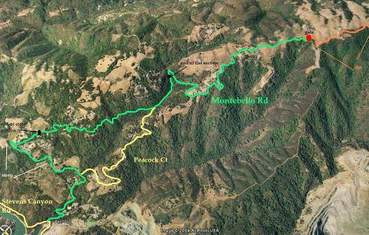
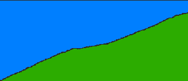

|
2006 Low-Key Hillclimbs Week 1: Montebello 14 Oct 2006 |
|  |
| Aerial photo of Montebello, courtesy of Stanford Cycling |
The Low-Key Hillclimbs open with a traditional opening: Montebello Road. Montebello climbs from near Steven's Creek Reservoir, past the Montebello Vinyards, and to the fire road which eventually connects with the top of Page Mill Road. We're sticking to the hard stuff on this one, though.
|  |
| profile, from Lucas Pereira's more detailed version |
"2-1-2" is what you want to remember on this one. Two miles of variable, but generally steep grades, with one short section approaching 15%. Then a mile generally flat -- don't let up the effort too much here, though! Finally, two steeper miles, around 7%, until a short section of lesser grade before the finish.
Our insurance demands it: helmets are required. Sorry kids, no exceptions!
Go to the parking lot on Steven's Canyon Road, at the reservoir, just north of Montebello road. Parking is available there. We will stage there at 10am for a rolling start to the base of the climb, when the fun begins! Registration opens at 9am, closing at 9:45am.
| stats | 5.3 miles, 1940 ft, 6.9% |
| format | mass start |
| time | reg 9 - 9:45 start 10am |
| coordinator | |
| aerial view | Stanford Cycling |
| route profile | Lucas Pereira's profile |
| weather | Weather Underground Weather Bonk |
| registration form |
PDF form |
{kind=link}